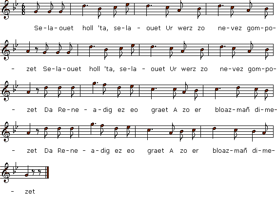

|
VERSION "KANAOUENNOU" I Selaouet holl 'ta, selaouet Ur werz zo nevez gompozet! Selaouet holl 'ta, selaouet Ur werz zo nevez gompozet! Da Reneadig ez eo graet A zo er bloaz-mañ dimezet. Da Reneadig ez eo graet A zo er bloaz-mañ dimezet. A zo er bloaz-mañ dimezet, Mez nompas dimeziñ karet. Reneadig c'hlas a c'houlenne Digant he mamm un deiz a oe: - Petra zo nevez en ti-mañ Pa 'mañ an tri bofer war an tan, Ur berr krenn zo ruz a welan Un bras ivez hag un bihan? - Ma merc'h, soue'et on ho klevet: Warc'hoazh kentañ 'mañ hoc'h eured! - Mar 'mañ m' eured warc'hoazh kentañ Ma ya dont d'am gwele bremañ. Me ya d'am gwele da gouskat 'Vit sevel warc'hoazh mintin mat. 'Vit sevel warc'hoazh d'ar beure Da fichañ ma dilhad nevez. - Reneadig c'hlas a lavare D'he matezh vihan an deiz-se: - Matezh vihan, din-me laret, C'hwi rafe plijadur em andret ? Mont da gas lizher d'am c'hloareg A zo din o ouelañ dourek - Evel un ael, mestrez yaouank, Me zo vont bremañ prontamant. - Ar vatezh vihan a lare En Kervalbret pa errue: - De-bonjour deoc'h, tud an ti-mañ, Ar mab henañ, pelec'h emañ? - Emañ 'barzh e wele klañv-bras, 'Baoe eo dime'et Reneadig C'hlas. 'Mañ du-se e kambr ar studi Matezh vihan, it d'e gaout di! - - De-bonjour deoc'h, kloareg yaouank! - Ha deoc'h ivez, matezhig koant! - Setu ul lizher, lennet-han: Gout a refot pezh zo warnañ. - Mar bez gwir 'lar al lizher-mañ, Hi n'he deus ket pell da vevañ. Me 'm eus nebeutoc'h, siwazh din! Ha prestik amañ e varvin. - II Reneadig C'hlas a lavare Barzh prenestr he c'hambr un deiz oe: - Me a wel ar gompagnunezh Prest d'antren 'barzh koad an Diez. Youenn Sellar er penn kentañ Na ma mallozh me ro gantañ! Gant ma mamm ha ma zad ivez Gant kement a vag bugale. Gant kement a vag tud yaouank Defaot n'o lezint dont d'o c'hoant... - Pa oa gant an hent o vonet Sone ar glas d'he dous karet... Teir gwech d'an douar hi zo koue'et. Youenn Sellar 'n eus hi savet. Reneadig C'hlas a lavare D'an Aotrou Person en deiz-se: - Hastit laret ho ofern-bred Peotramant n'hi c'hlevin ket. - III Reneadig C'hlas a lavare Ti he mamm-gaer pa arrue: - Mard on ar verc'h-kaer en ti-mañ Tapet din ur bank d'azezañ! - Ma merc'h, soue'et on d'ho klevet War inkane mat oc'h deuet. - Gwell vije din bout deut war droad, Mar vijen deut gant va gras vat. Mard on ar verc'h-kaer en ti-mañ Pelec'h 'mañ 'r gwele 'c'h an ennañ? - 'Mañ du-se e kampr ar studi. Va mab Youenn, it daveti! 'N anv Doue, konsolet-hi! Tamm boued ebet ken n'hall debriñ. - De-bonjour deoc'h ma mestrez koant. - Ha deoc'h ivez, intañv yaouank. 'Vit intañv n'ho kemeran ket. Mez padal, kredit e viet! - Ur gador hi he deus tapet, Un all d'he fried 'deus roet. - Ma fried paour, mar am c'haret, Dont d'ar veilh emberr vin leusket. Dont d'ar veilh emberr vin leusket. - D'ar veilh emberr na n'iet ket 'Balamour 'mañ noz hoc'h eured. D'an interamant laran ket. - Ma fried paour, mard oc'h kontant, Me ya d'ober ma zestamant: E-barzh godell ma brozh-eured A zo ur som a bemp kant skoed: Ar re-se roan deoc'h, ma fried, 'Vit ar goustamant ho peus bet. E-barzh ma zavañjer eured, Zo ur som a hanter-kant skoed: Roit an'e d'am matezh vihan He deus bet ganin kalz a boan O tougen lizheroù kollet 'Tre maner Glas ha Kervalbret. E-barzh ma c'hotilhon eured Zo ur som a dri-ugent skoed: Lod a roit d'ar beorien. Hep ankoue'añ ar veleien, Evit lakaat ganeomp pedenn Pa vimp kousket en douar yen. - Hi souch he benn war he barlenn Hag eno e varvas souden. Doue a bardon an Anaon: Emañ o c'horf war ar var-skaoñ D'an neñv eo nijet o ene Aet int d'eureujiñ dirak Doue. Aet int o-daou en ur poullad Pa n'int ket aet 'n ur gwelead. D'an neñv eo nijet o ene Aet int d'eureujiñ dirak Doue. Kanet gant Paolina Ar Moual euzh Karaez. |
TRADUCTION FRANCAISE I Ecoutez tous, écoutez donc: On vient de faire une chanson. Ecoutez tous, écoutez donc: On vient de faire une chanson. Et le sujet en est Renée Qui cette année s'est mariée. Et le sujet en est Renée Qui cette année s'est mariée. Dont l'union fut célébrée Sans qu'elle ne l'eût désirée. Renée la Pâle demanda Donc à sa mère ce jour-là: - Mais que se passe-t-il ici, Pour qu'au feu trois chaudrons soient mis? J'y vois rougeoyer le moyen, Le petit, le grand aussi bien. - Ma fille, vos mots me surprennent: Vos noces ont lieu demain même. - Si demain me marier je dois, Je vais me coucher de ce pas. Je vais me coucher, car demain Je me lève de bon matin, Pour préparer, sitôt levée, Ma belle robe de mariée. Renée la Pâle demanda A sa servante ce jour-la: - Faites preuve, encore une fois, De dévouement à mon endroit, Portez à mon clerc cette lettre, Désolé comme on ne peut l'être. - De vous servir je suis avide: Un ange n'est pas plus rapide. - La jeune servante disait En arrivant à Kervalbret: - Bonjour, à vous tous, sous ce toît! L'aîné de vos fils est-il là? - Il est malade et alité. Renée s'est mariée, comme on sait. C'est dans le bureau qu'on l'a mis. Vous l'y trouverez. Allez-y! - Jeune clerc, je vous dis bonjour. - Je vous dis bonjour, à mon tour. - Tenez, cette lettre est pour vous. Lisez-la donc. Vous saurez tout. - Si cette lettre l'on en croit, Dans peu de temps elle mourra. Et il me reste à vivre encor Bien moins. Bientôt je serai mort. - II Renée la Pâle s'écria A sa fenêtre, ce jour-là: "Je vois un groupe pénétrer Là-bas dans le Bois de Diez. Yves sellar vient en premier Maudit soit le jeune marié! Maudits soient mon père et ma mère, Et ceux qui comme eux élevèrent Et nourrirent leurs enfants pour Contrarier, plus tard, leurs amours. - Et quand ils se mettent en route, Pour le clerc, le glas sonne. Ecoute! Trois fois à terre elle tomba. Yves la releva trois fois. Renée la Pâle confia A Monsieur l'Abbé ce jour-là: - Hâtez-vous de dire la messe, Avant qu'en moi la vie ne cesse. - III Renée disait en arrivant, Ce jour-là, chez ses beaux-parents: - On a pour sa bru plus d'égards: Qu'on me donne un banc pour m'asseoir. - Ma fille, que dites-vous là? Vous qu'un si beau cheval porta! - J'eus préféré venir à pied, Si c'eût été de mon plein gré. Mais si je suis la bru céans, Montrez-moi mon lit à présent. - On l'a dressé dans le bureau. - Yves, allez la voir tantôt! Et, au nom de Dieu, calmez-la! Elle n'a rien mangé, je crois. - - Bonjour, ma jolie bien-aimée! - Ah! jeune veuf, bonne journée! Non que pour un veuf je vous prenne, Mais bientôt le serez, quand-même. - Elle prend une chaise, puis En donne une autre à son mari. - Mon pauvre ami, si vous m'aimez, Ce soir, laissez-moi donc aller A sa veillée funèbre. - Non Vous n'irez pas. Il n'est pas bon Qu'ainsi sa nuit de noce on passe. Allez aux obsèques, de grâce! - Mon pauvre ami, je voudrais tant Faire à présent mon testament: Dans la robe que je portais Cinq cents écus vous trouverez. Prenez-les donc: ils sont pour vous Qui gâchâtes un argent fou. Mon tablier contient encor Au total cinquante écus d'or. Remettez-les à ma servante Qui fut avec moi si patiente, Portant des plis sans rechigner De mon manoir à Kervalbret. Dans mon cotillon de mariage Soixante écus: qu'on les partage Entre les pauvres du pays Sans oublier les prêtres qui Diront pour moi quelque prière Le jour qu'ils me mettront en terre. Elle attira vers son giron Sa tête et mourut pour de bon. Que Dieu pardonne aux trépassés Pour qui les tréteaux sont dressés: Leurs âmes montent vers les cieux Pour être unies devant Dieu. On les mit dans la même tombe, Leur lit nuptial en ce bas monde. Leurs âmes sont montées aux cieux... Qu'elles soient unies devant Dieu! Traduction: Christian Souchon (c) 2012 |
ENGLISH TRANSLATION I O listen all attentively I'll sing you a new melody! O listen all attentively I'll sing you a new melody! A song about little Renée Whom her parents married away A song about little Renée Whom her parents married away This year Renée the Pale was wed But loved another one, instead. Everything started when Renée Has asked her mother one day: - Pray, what is in our house afoot, Hearth fire and three caldrons to boot? One of them red-hot already, The big and the small, presently? - I am surprised by your question: It's to celebrate your union! - If tomorrow I'm to marry I'll go to bed immediately. I'll go immediately to bed And I'll rise at daybreak, she said. I'll rise at daybreak tomorrow: My wedding dress I must narrow. - Renée the Pale then has addressed Her little maid with a request: - My friend, concerning my lover, Would you do me a small favour? To my clerk's with this letter go! His eyes with tears must overflow. - O my young mistress, this moment For you I shall go on errand. - At Kervalbrey's the little maid- Servant arrived soon and she said: - My greeting to all everyone! Tell me where is your eldest son? - He is in bed, sick and aching Since he heard of Renée's wedding. His bed is in the library. Go, you won't miss him, certainly! - - Young Clerk, I wish you good morning! - Good morning, maid who's so charming! - Here is a note for you to read: You should peruse it. Go ahead! - This letter, if it tells the truth, My anxious mind never will soothe She has but three days to live! Still I'll die before. I am so ill! - II Renée the Pale said, one morning At her bedroom's window leaning: - Over there I see a party That will cross Diez Wood presently. Yves Sellar rides ahead of all: A special curse on him I call! And on my father and mother, And all such as raised a daughter And all such as a daughter raised Just to decide all in her stead. - To the church when they all did stroll They heared the bell for the clerk toll... Three times the poor girl swooned and fell. Yves helped her up. Ominous bell! Renée the Pale told the parson Who celebrated the union: - Quick, hurry up! Or I shall pass Away before you said the mass. - III Renée said on entering the house Where lived the mother of her spouse: - To your daughter-in-law don't frown, But show her a bench to sit down! - I am surprised you should be tired. Had you not a fine horse to ride?. - I would have come on foot, for sure, If this had been a pleasant tour. If I am your daughter-in-law, Show me my bed. I will withdraw. - Over there: in the library. - My son Yves keep her company! And in God's name, cheer her up, please! She did not eat. Make her at ease! - My beloved one, good day to you. - Young widower, I greet you, too. I do not mistake you for such But soon the word won't be too much! - She arranged for herself a chair, And for him, with the greatest care. - My poor husband, if you love me, Let me go to the wake, briefly. To the wake, briefly, let me go. - To the funeral wake? Oh no! Since tonight is your wedding night. But to the interment you might. - My friend, I'd like, with your consent, To make my will and testament: In the pouch of my wedding gown There's a sum of five hundred crowns: This will be for you, my husband, For the expense you had to stand. The same with the apron I did: Another fifty crowns are hid. Please, give them to the little maid: I bothered her to get her aid And aimless letters to convey From Manor Glas to Kervalbrey. Further, within my cotillion Are sixty crowns in addition: Part of it should be for the poor. But for the priests you'll keep a score, That they may once for us both pray Whom in the cold glebe they will lay. - Upon her lap his head she bent. Now her life had come to an end. O God, grant pardon to the dead! Upon the trestles they were laid. Their souls to heaven they took flight They wed before God the same night. They did not sleep in the same bed, In the same grave they lie instead By one another they took stand To be united by God's hand. Translated by Christian Souchon (c) 2012 |